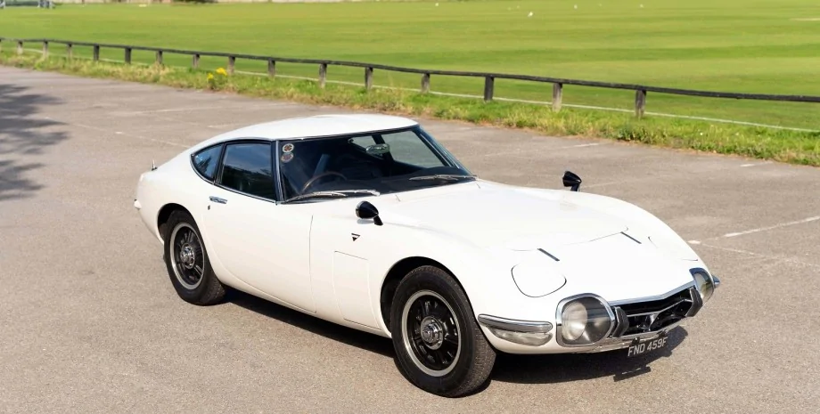

Загалом у 1967-1970 роках випущено лише 337 купе Toyota 2000GT. Елегантний та швидкий спорткар прославив японську марку на весь світ.
У Парижі на аукціон RM Sotheby's виставили Toyota 2000GT 1967 року. Попередньо автомобіль оцінили в 700 000 євро - на рівні трьох суперкарів Ferrari F8 Tributo. Історію авто розповіли на сайті аукціонного будинку.
Toyota 2000GT вважається найдорожчою моделлю за всю історію марки. Спорткар допоміг японській компанії голосно заявити про себе на весь світ та кинути виклик іменитим європейським моделям.А ще він відзначився гучними перемогами у перегонах.Усього з 1967 по 1970 роки випустили лише 337 купе Toyota 2000GT і два кабріолети. Версії без даху створили спеціально для фільму про Джеймса Бонда "Живеш лише двічі". Зараз ці авто дуже цінуються колекціонерами і часом вартість Toyota 2000GT перевищує мільйон євроВосьмициліндровий двигун Формулі-1 був розточений до трьох літрів або 2981,7 см³ (діаметр і хід поршня 78 мм) і розвивав 310 л.с. (228 кВт) при 7450 об/хв; максимальний крутний момент 318 Нм при 5950 об/хв. По літровій потужності цей двигун нічим не поступався набагато більшим двигунам від Jaguar та Ferrari. Максимальна швидкість 300 SLR склала 290 км/рік (Ле-Ман, пряма Мульсан). Двигун був спроектований (стиснення 12:1) так, що йому не потрібне спеціальне паливо, але йому можна було їздити на високоякісному бензині. 3-літровий двигун пройшов своє останнє випробування на автомобілі Гран-при W 196 30 січня 1955 року в Буенос-Айресі.На хребтову раму шасі встановили незалежну підвіску важеля-пружинну, 5-студруковану ручну коробку передач і двигун від Toyota Crown з двома розподільними валами і випускним колектором з виходом на кожен циліндр. 6-циліндровий мотор мав об'єм 2 літри і дозволяв автомобілю розганятися до 219 км/год, розгін 0-100 км/год займав 10,4 сек, час розгону 0-160 км/год становив 27,5 сек.[4] Зупинялася машина за допомогою дискових гальм на всіх колесах. В інтер'єрі використовувалася шкіра та дерево, а на панелі приладів була велика кількість різноманітних покажчиків.